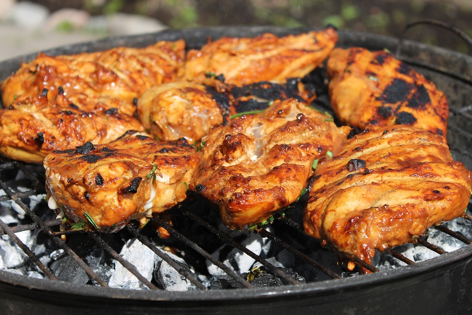

HOME
Grilled Chicken with Whiskey Barbecue Sauce

- INGREDIENTS
- 1 1/4 cups ketchup
- 1 to 1 1/2 tsp. hot sauce
- 2 tablespoons dark molasses
- 2 tablespoons Dijon mustard
- 2 tablespoons whiskey
- 2 tablespoons Worcestershire
- 1 tablespoon cider vinegar
- 1 large garlic clove, minced
- DIRECTIONS
- Build a charcoal or wood fire in a grill and let burn to medium (350° to 450°; you can hold your hand 5 in. above cooking grate only 5 to 7 seconds). Bring salad dressing to room temperature. Set aside 1/2 cup sauce.
- Grill chicken until browned all over, about 15 minutes, turning occasionally. Turn again, generously brush tops with some of remaining sauce, and cook a few minutes; repeat turning and brushing 2 more times, until chicken is well-browned and cooked through, 10 to 15 minutes total.